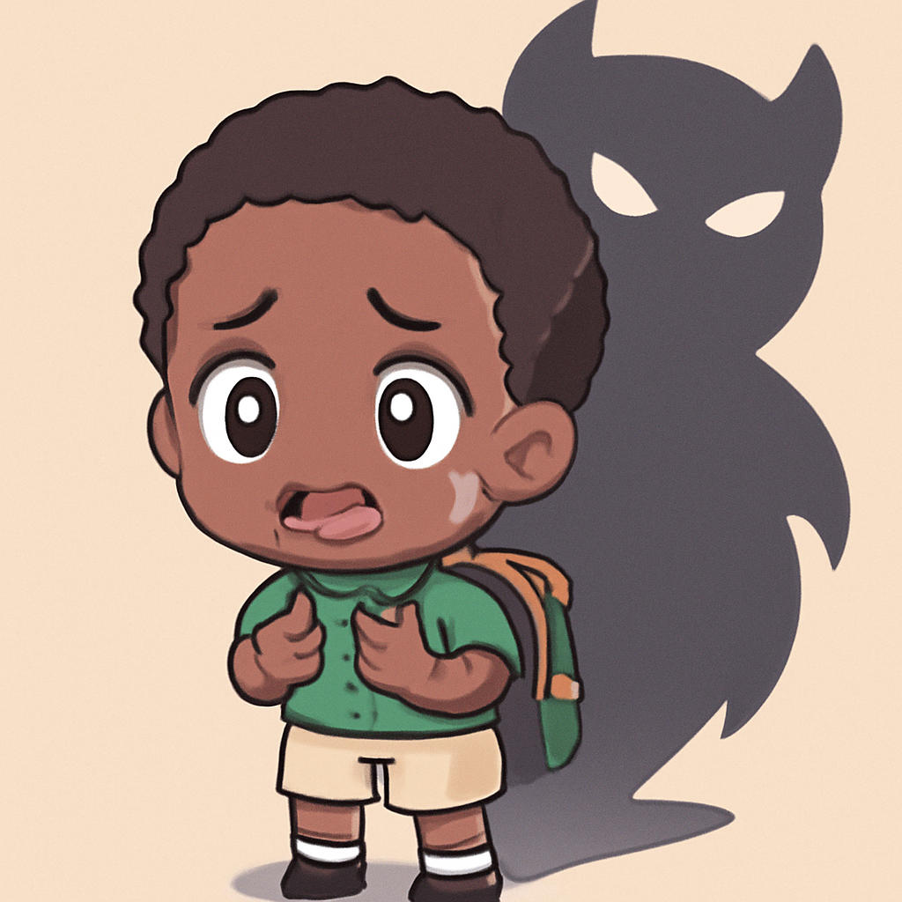
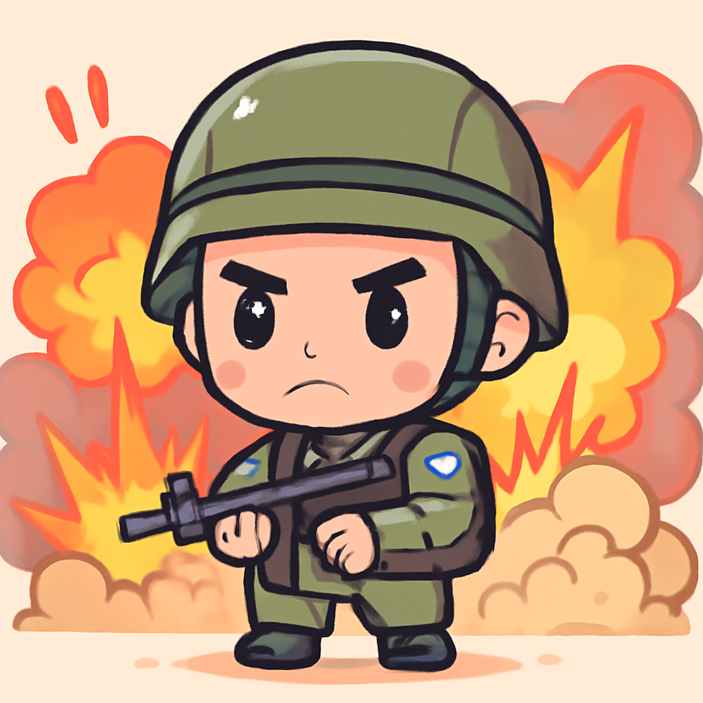

其一 · 台灣 · 台灣重申獨立立場
美國總統特朗普警告台灣不要正式獨立。
在特朗普總統從北京回來後，台灣再次強調其獨立立場，儘管特朗普警告若宣布正式獨立可能會有後果。這對台灣來說不僅是政治上的挑戰，還可能影響國際關係，讓人不禁想，這場獨立的戲碼會不會有續集？
🔗 原始新聞 ↗
2026-05-17 · 以古觀今，以笑抗愁
美國總統特朗普警告台灣不要正式獨立。
在特朗普總統從北京回來後，台灣再次強調其獨立立場，儘管特朗普警告若宣布正式獨立可能會有後果。這對台灣來說不僅是政治上的挑戰，還可能影響國際關係，讓人不禁想，這場獨立的戲碼會不會有續集？
🔗 原始新聞 ↗
意大利一名男子駕車衝進人群，造成八人受傷。
在意大利摩德納，一名男子駕駛汽車衝撞行人，導致八人受傷，其中四人傷勢嚴重。目擊者迅速追趕並阻止了他，讓人不禁想，這位司機可能是想參加「衝撞大賽」卻選錯了場合。這事件引發了對公共安全的討論。
🔗 原始新聞 ↗
超過50名學童在尼日利亞被綁架。

尼日利亞博爾諾州發生一起驚人的綁架事件，超過50名學童被劫走，直到目前為止還沒有任何團體聲明負責。這樣的事件再次讓人感受到當地安全形勢的脆弱，也讓人希望這些孩子能夠早日回家。
🔗 原始新聞 ↗
哈馬斯高層在以色列空襲中被殺。

以色列再次對哈馬斯展開攻擊，這次的目標是哈馬斯軍事部門的新領導人伊茲·阿爾-哈達德。隨著局勢的升級，這一事件可能引發更大的衝突，讓人不禁擔心這場「貓捉老鼠」的遊戲會持續多久。
🔗 原始新聞 ↗
瑞士將公開關於奧斯維辛的秘密檔案。
瑞士決定公開關於納粹醫生孟格勒的秘密檔案，這位惡名昭彰的醫生逃亡後曾在瑞士活動。這不僅是對歷史的反思，也可能為受害者家屬帶來一些真相，讓人對歷史的塵封過去有了新的認識。
🔗 原始新聞 ↗